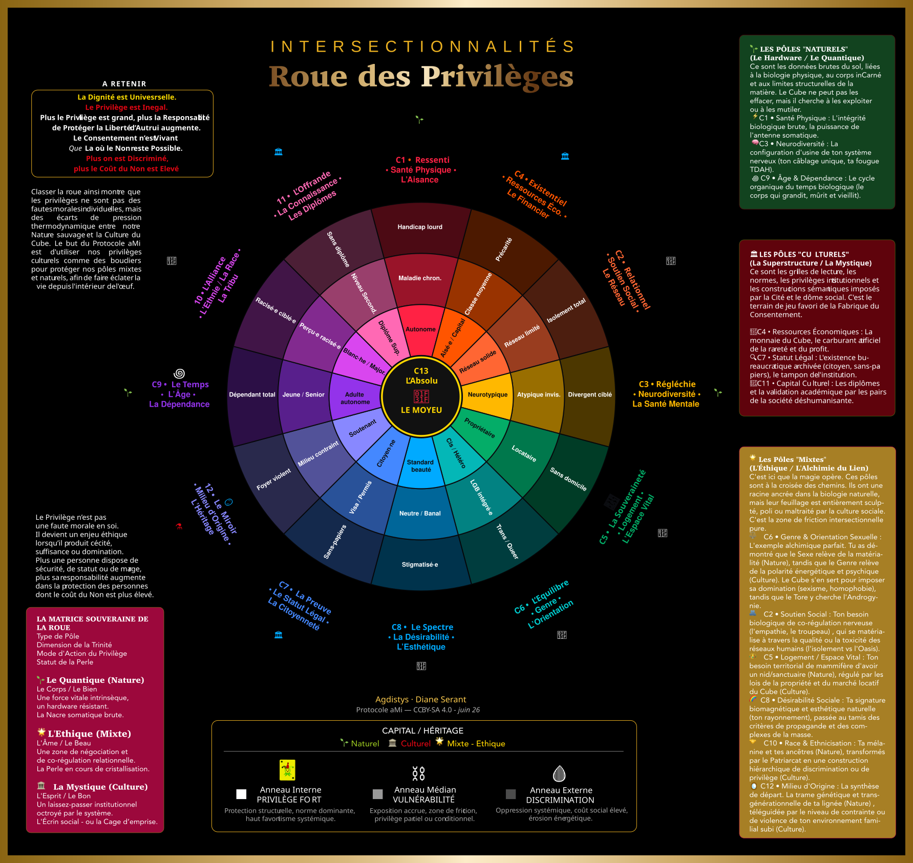

🌫️ Une Excuse qui Évite les Faits
« Désolé·e si tu l’as mal pris » laisse le geste dans le flou. « Mais tu m’as poussé·e à le faire » déplace la responsabilité. « Maintenant, passe à autre chose » impose un délai à la personne blessée.
L’Historique garde tes traces. Mes Mémoires pose des questions à ton passé pour éclairer tes prochains choix : une lecture, des pistes à éprouver, puis ce que tu choisis d’en retenir. Ton bilan peut évoluer sans réécrire tes anciennes traces.
Accorder les trois calendriers, c’est situer un même instant dans
= 🧭 Ton Repère pour relire 🔥 Ton Énergie sur ⚡️ Tes Ressentis
Mes Mémoires relit les repères du journal et propose des pistes à partir de leurs contextes. Les chiffres décrivent tes saisies ; les suggestions restent à éprouver et à choisir. Miroir & RefleXion ajoute un rapprochement lexical expérimental. La fiabilité du stockage et des calculs ne valide pas à elle seule une interprétation psychologique.
Un même instant donne trois coordonnées complémentaires :
♾️ Le Moment Perpétuel situe le temps mesuré ;
🌍 Le Cycle des Saisons situe le moment dans la roue cyclique de l’année ;
✨ L’UnS’Tant lui donne une date dans le calendrier aMi, relié à la lunaison réelle.
Les roues lisent le même instant de référence.
« Pré-remplir » renseigne les dates encore vides depuis ton point de départ actif, ou depuis le début du mois. Les traces réelles de cette période sont proposées à ta sélection. Ta question, tes interprétations et tes choix restent à écrire ; rien n’est sauvegardé automatiquement.
Un point de départ personnel est un repère dans ton histoire. Il conserve les notes et les bilans précédents ; les calendriers et les cycles de la Lune suivent leur cours.
Une lecture sur cet appareil, à partir de tes notes et repères. Le Sas joint est inclus si sa date appartient à la période.
La question oriente la recherche vers la disponibilité, le sommeil, le milieu, la douleur ou le plaisir. Pour d’autres sujets, l’app retrouve les mots présents dans tes notes. Elle montre les sources et les repères renseignés ; elle ne comprend pas toutes les nuances d’un récit.
Les comparaisons conservent les échelles d’origine et demandent au moins deux dates de chaque côté. « Sans mention » ne veut pas dire « sans cette expérience ». Les cases vides restent vides. Le Sas joint apporte une observation distincte, sans être mélangé aux moyennes du journal.
Les idées viennent d’un répertoire de petits essais, reliées aux contextes de tes traces. Tu peux les retenir, les modifier ou les laisser. Elles n’attribuent pas automatiquement une cause à ce que tu vis.
La Lecture de Cohérence met en regard les Formes, les Fonctions et les Relations. Elle cherche l’interprétation qui rend compte du plus d’observations avec le moins d’ajustements ajoutés pour les faire correspondre.
Registre : Opératoire · Heuristique · Analogique · Essentialiste.
État de connaissance : 🧭 Le Plus Cohérent · ✕ Réfuté · 📏 Mesuré · ❓ On ne Sait pas Encore.
Ces deux repères se lisent séparément. Ici, le descriptif porte sur tes repères déclarés, et les idées sont des pistes heuristiques à éprouver. Une cohérence peut orienter la recherche sans établir le mécanisme. L’absence de données ne réfute pas une piste.
Coche seulement celles que tu souhaites retenir.
Une case vide n’est pas une réponse zéro.
Facultatif : je relis cet extrait avant de le garder avec mon bilan.
Le brouillon reste dans cette page. « Garder ce bilan » l’enregistre sur cet appareil, avec les traces choisies. La date de relecture est un repère, sans notification automatique.
Pour éclairer ce bilan, tu peux aussi regarder 🌊 tes Rythmes et relire ❤️🔥 ton Énergie.
Rapprocher ce que je déclare et ce que j’ai consigné.
Bêta-test · Les rapprochements proposés restent à examiner. Une proximité de mots n’établit ni une contradiction ni une vérité sur toi.
Des mots pour préciser ce que je vis, des aliments pour nourrir mon corps.
Deux portes pour explorer ce que je reçois et ce que cela change pour moi.
Un vocabulaire plus fin peut aider à sortir du « ça va / ça va pas ». Cette liste est volontairement courte et originale : elle sert de porte d’entrée, pas de dictionnaire exhaustif.
« Soit je n’ai pas compris, soit je ne suis pas d’accord. Mais explique-moi : reformulons d’abord. »
Avant de contredire, je vérifie ce que l’autre veut dire. Comprendre ne m’oblige pas à approuver ; préciser un mot peut révéler un malentendu ou rendre notre désaccord plus clair.
On peut suspendre l’échange. Reformuler n’oblige pas à se justifier sans fin, ni à négocier une limite ou un refus.
Brouillon temporaire dans cette page ; rien n’est envoyé.
Formulation de Diane · échange avec Claude.
Deux portes de connaissance peuvent se compléter : les états corporels que j’ai traversés et les situations sociales ou relationnelles que j’ai vécues. Une expérience peut donner des points de comparaison que l’autre n’a pas ; elle mérite d’être écoutée sans être réduite à une étiquette.
Règles, grossesse, post-partum ou ménopause peuvent nourrir un savoir d’expérience. Les parcours diffèrent, et l’absence de l’une de ces expériences n’annule pas les autres savoirs d’une personne. La biologie, l’apprentissage et le contexte se rencontrent.
Subir une discrimination peut apprendre à repérer des contraintes et des rapports de pouvoir que d’autres remarquent moins. Ce savoir situé compte ; il ne rend pas toute interprétation infaillible. Je peux demander : « Qu’est-ce que ta place t’a appris que la mienne ne m’a pas permis de voir ? »
Transmission après la ménopause : l’hypothèse de la grand-mère explore des bénéfices évolutifs de l’aide aux descendants. Une étude chez les orques a observé un bénéfice de survie associé aux grand-mères, particulièrement après leur période reproductive. Cela soutient une hypothèse ; cela ne démontre pas une fonction unique de la ménopause ni une obligation de transmettre pour chaque femme.
Violence et mémoire : les réactions au traumatisme varient. Une victime n’a pas à présenter une mémoire particulière pour être écoutée ; le déni n’est pas une réaction automatique de tout auteur. On examine les actes, leurs effets et leur contexte.
Étude sur les grand-mères orques · PNAS, 2019 · Réactions au traumatisme · NIMH
Dans la lecture d’Agdistys du ParDon : regarder ce qui est reconnu, ce qui est réparé et ce qui change dans les actes. Ces repères éclairent une situation ; une formule isolée ne permet pas de connaître les intentions de quelqu’un.
« Désolé·e si tu l’as mal pris » laisse le geste dans le flou. « Mais tu m’as poussé·e à le faire » déplace la responsabilité. « Maintenant, passe à autre chose » impose un délai à la personne blessée.
Nommer précisément son acte et son effet, écouter sans imposer le récit, proposer une réparation adaptée, respecter un refus, puis changer durablement sa manière d’agir.
Une formulation possible : « J’ai fait… Cela a eu pour effet… J’en prends la responsabilité. Je propose… Tu peux refuser et tu n’as pas à me répondre maintenant. »
Pardon, réconciliation et reprise du contact sont trois choix distincts. Personne ne doit le pardon en échange d’excuses. Une réparation n’achète ni confiance ni accès à l’autre. Prendre de la distance pour se protéger n’est pas manquer à son devoir de pardon.
Le pardon à soi : desserrer le blâme que l’on porte après avoir subi, sans se rendre responsable des violences d’autrui. Ce chemin peut aussi se nommer autrement, à ta manière.
Repère relationnel aMi · observer les actes dans le temps, sans score ni verdict automatique.
Une émotion mérite d’être entendue ; elle n’impose pas à elle seule une action. Je peux distinguer le fait observé, ce que je ressens, le besoin que je reconnais et la demande que je souhaite formuler.
« Quand… je ressens… J’aurais besoin de… Serais-tu d’accord pour… ? » Une demande laisse une place réelle au Non. Face à des violences, trouver les mots parfaits n’est pas une condition pour être protégé·e.
L’écoute, un milieu moins agressif, le repos, la nature ou une activité choisie peuvent être des ressources à explorer. Il ne s’agit pas de se rendre responsable de tout ce qui nous arrive.

À la base, le goût aide le vivant à s’orienter vers ce qui nourrit et à éviter ce qui nuit. Mais comme les émotions, il est plastique et biaisable : apprentissage, habitudes, dépendances et contexte peuvent détourner le signal.
Maturité aMi : réaligner préférence, effets réels et homéostasie. Ce n’est pas parce que quelque chose est agréable qu’il est nécessairement beau, bien ou bon.
Trois tamis de tradition populaire attribués à Socrate : ici utilisés comme aide de discernement, pas comme preuve historique de citation.
Un biais dit : « voici comment ma lecture peut se déformer ». La Question Non Orientée demande : « comment vérifier sans fabriquer la réponse ? »
Le réel peut corriger ma croyance. Je distingue fait, vécu, interprétation, intention et indécidable.
Je ne parviens plus à stabiliser ce qui est vrai ou faux : le doute reste ouvert même lorsque la vérification est possible. « La folie du doute » dans le vocabulaire du corpus.
Une représentation fausse ou absurde est maintenue comme réelle malgré ce qui permettrait de la réviser : « croire des mensonges / absurdités » dans le vocabulaire du corpus.
DARVO et inversion accusatoire peuvent être lus, dans ce modèle, comme des formes de distorsion maintenue du récit relationnel. On cote le mécanisme observable et sa rigidité avant d’inférer la maturité de la personne.

Une position sociale n’est ni une culpabilité ni une vertu. Elle modifie les contraintes, les protections et parfois ce qu’il est facile ou difficile de voir.
DARVO nomme une séquence de renversement : nier, attaquer, puis inverser les rôles de victime et d’auteur.
Script de déresponsabilisation : déni → minimisation → déplacement de responsabilité → justification → inversion accusatoire.
| Catégorie | Intention / conscience | Lecture rapide |
|---|---|---|
| Intempérie | Aucune intention humaine | Phénomène naturel ; pas de responsabilité humaine directe. |
| Accident / erreur | Non prémédité | Imprudence, erreur ou négligence possibles ; la responsabilité dépend du contexte et de ce qui était évitable. |
| Violence | Préméditée ou non | Acte ou omission qui porte atteinte, met en danger ou maintient un déséquilibre ; active ou passive. |
Ces mouvements ne sont ni obligatoires ni linéaires. On peut revenir, sauter, mêler plusieurs états ou ne jamais rencontrer certaines étapes.
Dans le corpus aMi, le ParDon n’est pas présenté comme une obligation émotionnelle, mais comme une transaction de justice restauratrice. Le pardon à soi et le ParDon à l’autre sont distingués.
Un système où chaque instrument contrôle les angles morts des autres. Le questionnaire donne une photographie de ma représentation de moi ; Mon Cycle recueille une série de traces situées dans le temps ; l’Accordage regarde leur rencontre sans décider à ma place laquelle « dit la vérité ».
Tu peux charger un export structuré du Test Aveugle RefleXion. Mon Cycle le garde comme rail D sans le fusionner avec V.
Sublimation : transformer l’expérience brute en compréhension structurée. Éducation : rendre cette compréhension intelligible, révisable et utile. Transmission : stabiliser ce qui protège afin que d’autres puissent s’en servir sans devoir revivre la même épreuve.
🍲 ALIMENTATION · COMPRENDRE & CHOISIR
La Cuisine est l’Art de la Nutrition.
Composer une assiette qui nourrit le corps, respecte ses besoins et laisse une place au plaisir. Les choix se construisent avec le budget, la culture, l’accès aux aliments et la santé.
Le végétalisme concerne l’assiette : il exclut les aliments d’origine animale. Le véganisme est un engagement plus large contre l’exploitation et la cruauté envers les animaux, dans la mesure du possible et du praticable : alimentation, vêtements, loisirs et autres usages.
Position éthique aMi : lorsque j’ai une alternative accessible qui me nourrit, je choisis de réduire la violence évitable envers les autres animaux. Le plaisir de manger peut aussi devenir le plaisir de prendre soin du vivant.
Cet engagement interroge les actes et les systèmes. Manger un produit animal ne permet pas de diagnostiquer une personnalité « narcissique ». Les contraintes de survie, de santé et d’accès rendent les possibilités inégales.
Se nourrir sans exploitation : explorer les légumineuses, céréales, graines, fruits et légumes ; apprendre des recettes qui donnent envie ; prévoir une source fiable de B12. L’étiquette « vegan » ne garantit pas à elle seule un bon équilibre nutritionnel.
Définition · The Vegan Society · Vegan Style · Agdistys
Les cultures alimentaires inuit dépendent des territoires, des saisons, de la chasse, de la pêche et de l’accès aux autres aliments. Elles ne se résument pas à « il n’y a rien autour ». Des études observent des liens entre alimentation et microbiote ; elles ne démontrent pas que chaque personne inuit serait biologiquement obligée de manger uniquement des animaux.
Chez les Bishnoï du Rajasthan, la protection des arbres et des animaux occupe une place importante. Des témoignages documentent aussi des femmes allaitant des faons orphelins : un exemple de soin entre espèces. Cela ne constitue pas un échange alimentaire démontré avec ces faons ni une définition du véganisme.
L’intuition aMi : nourrir une relation de protection et de réciprocité avec les autres règnes, en regardant ce qui est réellement donné, reçu et préservé.
Étude du microbiote inuit, 2017 · Bishnoï · travail de Franck Vogel · Témoignage sur les faons · NDTV
Maladie cœliaque : maladie auto-immune déclenchée par le gluten du blé, de l’orge et du seigle. Une fois le diagnostic posé, l’éviction stricte et durable, avec attention aux contaminations croisées, fait partie du traitement.
Allergie au blé : réaction allergique à des protéines du blé ; les évictions se définissent avec l’allergologue. « Sans blé » et « sans gluten » ne sont pas synonymes.
Sensibilité non cœliaque au blé/gluten : des symptômes peuvent exister après exclusion d’une maladie cœliaque et d’une allergie. Le gluten n’est pas toujours le seul composant en cause ; une amélioration isolée ne suffit pas à identifier le mécanisme.
Sans trouble identifié, retirer le gluten n’a pas de bénéfice général démontré. Un produit sans gluten peut rester pauvre en fibres ou riche en sucre. Riz, sarrasin, maïs, quinoa, pommes de terre et légumineuses offrent des alternatives.
Avant une éviction pour des symptômes : discuter du dépistage cœliaque ; supprimer le gluten avant les examens peut les fausser. Si tu l’évites déjà ou as une allergie, ne le réintroduis pas seul·e pour un test.
Cœliaquie et alimentation · NIDDK · Avant les examens · NIDDK · Distinguer les réactions au blé · NHS / Allergy UK
Jeûner consiste à s’abstenir de manger pendant une période. Cette pratique peut avoir un sens culturel, spirituel ou personnel ; ses effets sur la santé dépendent de sa forme, de sa durée et de la personne. Chacun·e peut aussi choisir de ne pas jeûner.
La pause nocturne est l’intervalle habituel entre le dernier repas et le suivant. Le jeûne intermittent organise des périodes sans apport énergétique, par exemple en limitant les heures de repas ou certains jours. Le jeûne prolongé dure beaucoup plus longtemps : ce n’est pas une simple variation d’horaires et il ne s’improvise pas sans suivi médical.
Le jeûne sec retire aussi les boissons : il expose à la déshydratation. Les résultats des études sur le jeûne intermittent avec hydratation ne permettent pas de lui attribuer les mêmes bénéfices.
Chez certains adultes, notamment en surpoids, le jeûne intermittent peut aider à réduire le poids et améliorer certains repères métaboliques. Une synthèse de 99 essais publiée dans le BMJ en 2025 trouve des effets globalement comparables à une restriction énergétique continue, avec quelques différences selon la méthode. Les bénéfices à long terme restent à préciser.
Il n’est pas nécessaire de jeûner pour bien se nourrir. La qualité des aliments, des apports suffisants et une organisation compatible avec sa vie restent essentielles. Les promesses de « détox », de guérison universelle ou de rajeunissement garanti ne sont pas établies.
Le jeûne volontaire est à éviter pendant la grossesse ou l’allaitement, chez les enfants et adolescent·es, en cas de dénutrition ou d’antécédents de troubles des conduites alimentaires.
En cas de diabète, de maladie chronique ou de traitement — notamment insuline ou médicaments à prendre avec un repas — demande un avis médical avant de modifier tes horaires ou tes apports. Ne change pas seul·e les doses pour pouvoir jeûner.
Vertiges, tremblements, malaise ou faiblesse marquée sont des raisons d’interrompre le jeûne et de demander conseil. Une confusion, une perte de connaissance ou un malaise important nécessitent une aide urgente.
🌱 Mon repère : est-ce que mon rythme alimentaire soutient mon énergie, ma concentration, mon sommeil et une relation paisible à la nourriture ? Je peux adapter ou arrêter une pratique. Manger pour répondre à un besoin n’est pas un échec.
Dans Ma Trace, les repères de faim, de satiété et la note libre permettent de consigner ce que tu observes. Une observation personnelle aide à te connaître ; elle ne suffit pas à prouver qu’un effet vient du jeûne.
Un nutriment peut remplir plusieurs fonctions. Ce tableau propose des exemples végétaux et enrichis ; il ne calcule pas tes besoins individuels et ne prescrit aucun complément.
| Fonction | Nutriments | Exemples & repères |
|---|---|---|
| 🔥 Fournir de l’énergie | Glucides, lipides ; les protéines peuvent aussi fournir de l’énergie. | Féculents, légumineuses, huiles, noix. Manger suffisamment compte autant que diversifier. |
| 🧱 Construire et entretenir les tissus | Protéines et acides aminés, lipides. | Lentilles, pois chiches, haricots, tofu, céréales, graines : varier les sources au fil de la journée. |
| 🧠 Entretenir les membranes cellulaires | Acides gras, dont oméga-3. | Colza, noix, lin moulu : ALA. Les huiles de microalgues peuvent apporter du DHA et parfois de l’EPA ; conversion de l’ALA limitée. |
| 🩸 Transporter l’oxygène | Fer, composant de l’hémoglobine. | Légumineuses, graines. Un aliment riche en vitamine C au même repas favorise l’absorption du fer végétal. |
| ⚡ Soutenir le système nerveux et les cellules sanguines | Vitamine B12. | Source fiable indispensable en végétalien : aliments enrichis en quantité adaptée et/ou supplémentation. Levure non enrichie et spiruline ne suffisent pas. |
| 🦴 Entretenir les os ; agir sur muscles et nerfs | Calcium ; vitamine D pour son absorption. | Boissons végétales enrichies, tofu au calcium. Pour la vitamine D : produits enrichis et apports adaptés à la situation. |
| ⚙️ Participer aux réactions du métabolisme | Vitamines du groupe B, magnésium et autres minéraux. | Céréales complètes, légumineuses, noix et graines. Une vitamine ne fournit pas de calories à elle seule. |
| 🦋 Fabriquer les hormones thyroïdiennes | Iode. | Sel iodé en quantité modérée, produits enrichis selon l’étiquette. Les algues ont des teneurs très variables, parfois excessives. |
| 🌱 Soutenir le transit et nourrir certains microbes | Fibres et amidon résistant. | Légumineuses, céréales complètes, fruits, légumes. Augmenter progressivement selon la tolérance digestive. |
| 💧 Hydrater et assurer les échanges | Eau et électrolytes. | Eau de boisson et aliments ; besoins variables avec chaleur, activité et santé. Ajouter du sel n’est pas systématiquement nécessaire. |
Le goût, l’odeur, la texture et la convivialité comptent aussi : ils participent au plaisir et à l’envie de manger, sans constituer une catégorie de nutriments essentiels.
Fonctions générales · MedlinePlus · Fer · B12 · Calcium · Magnésium · Iode · Oméga-3 · NIH · Fibres et microbiote
Se nourrir suffisamment et varier ses aliments peut soutenir la santé physique et mentale. Les légumes secs apportent des fibres dont une partie est utilisée par des microbes intestinaux ; leurs effets varient avec l’aliment et la personne. « Plus de bactéries » ne signifie pas automatiquement « meilleure santé ».
Les 9 % et 15 %, avec leur contexte : une méta-analyse de 2021 portant sur des études observationnelles chez les adultes de 45 ans et plus rapporte des odds ratios de 0,91 pour les légumes et de 0,85 pour les fruits, en comparant les apports les plus élevés aux plus faibles. Cela correspond à des cotes de dépression ultérieure inférieures d’environ 9 % et 15 %, pas à une baisse garantie des symptômes ni à 9 ou 15 points de risque en moins. Ces études ne prouvent pas à elles seules la causalité.
Dans le petit essai SMILES (67 adultes, 12 semaines), un accompagnement alimentaire a amélioré les symptômes dépressifs par rapport à un soutien social. Il était proposé en complément des soins habituels ; ses résultats ne promettent pas une guérison par l’assiette.
Dire que « la malbouffe réduit les cellules nerveuses du cerveau et des autres organes » serait trop général : les études citées ici ne mesurent pas une telle destruction. On peut parler de qualité alimentaire et de santé sans faire peur à chaque repas.
Une dépression n’est pas une faute alimentaire. Budget, fatigue, maladie et violences peuvent compliquer les repas. Un repas simple ou une aide pour cuisiner peut déjà être un appui.
Méta-analyse, 2021 · origine des chiffres · Essai SMILES, 2017 · Légumineuses et microbiote · revue
Pour prolonger : Bien manger pour ne plus déprimer, Guillaume Fond · Odile Jacob. Une lecture de vulgarisation autour de la psychonutrition, recommandée par Christophe André.
Des paillettes au goût umami, souvent utilisé pour une note fromagère : sur une soupe, des pâtes, des légumes ou dans une sauce. Une ressource culinaire pratique, à choisir pour son goût autant que pour sa composition.
Selon le produit, elle apporte des protéines et plusieurs vitamines B. La B12 n’est fiable que si elle est ajoutée et indiquée sur l’étiquette. Regarder la portion réellement consommée : une cuillère ne représente pas 100 g.
Levure maltée et sans gluten : le malt d’orge contient du gluten. En cas de maladie cœliaque, choisir uniquement un produit explicitement garanti sans gluten. Une levure alimentaire désactivée n’est pas un probiotique vivant.
Le mot « superaliment » ne garantit ni une composition complète ni un effet thérapeutique. La levure s’ajoute à une alimentation variée ; elle ne la remplace pas.
Dans « Les Alicaments », Agdistys cite Jade Allègre et son travail sur les usages de l’argile. « Argile » recouvre différents minéraux et préparations : des observations sur une argile donnée ne valent pas pour toutes.
Pour l’eau : certaines argiles peuvent fixer des substances à leur surface (adsorption) et participer à des procédés de traitement. Jade Allègre rapporte une mission au Rwanda en 1994 avec l’équipe DICAF et la diffusion de publications sur l’épuration de toxines cholériques dans l’eau. Ce récit mérite d’être distingué d’un essai qui mesurerait la qualité de l’eau avant et après traitement.
Une eau clarifiée n’est pas forcément potable : retirer certaines substances ne garantit pas l’élimination des bactéries, virus, parasites ou de tous les polluants. L’efficacité dépend de l’argile, du procédé et de l’eau ; elle doit être vérifiée. Ajouter de l’argile seule ne constitue pas une méthode universelle de potabilisation.
Jade Allègre · récit des missions · OMS · adsorption et traitement de l’eau · OMS · vérifier la protection microbiologique
Dans l’organisme : fixer une substance dans le tube digestif est une action locale ; cela ne démontre pas un nettoyage général du sang ou des organes.
La diosmectite purifiée est utilisée dans certains médicaments digestifs, avec des indications et précautions définies. Cela ne fait pas d’une argile brute ou cosmétique un aliment, un complément minéral fiable ou un remède universel.
À connaître avant toute ingestion : contamination possible par du plomb ou d’autres métaux, constipation et interactions avec des médicaments. Demander conseil à un pharmacien ou médecin sur le produit précis. Une argile cosmétique n’est pas destinée à être avalée.
Les affirmations « détox universelle », « antipoison », « soigne 80 % des urgences » ou « réinitialise l’ADN » ne sont pas établies. En cas d’intoxication, appeler un centre antipoison ou les urgences ; ne pas tenter de la traiter avec de l’argile.
Jade Allègre · référence de l’autrice · Diosmectite · notice officielle · Argiles et plomb · Assurance Maladie
Les Alicaments · article d’Agdistys · Ces repères distinguent alimentation, pratiques culturelles et traitements. Les propriétés thérapeutiques évoquées dans l’article source ne sont pas toutes établies.
Nous avons besoin de protéines et d’acides aminés essentiels, pas obligatoirement de viande. Un aliment apporte plusieurs nutriments ; plusieurs aliments peuvent contribuer au même besoin. Quantité, variété et absorption comptent.
Une alimentation végétalienne a besoin d’une source fiable et régulière de vitamine B12 : aliments enrichis en quantité adaptée et/ou supplémentation. Les végétaux non enrichis ne suffisent pas.
Fer, calcium, iode, vitamine D et oméga-3 demandent aussi de l’attention. Une alimentation variée et suffisamment abondante se construit selon les besoins ; grossesse, enfance ou maladie peuvent demander un accompagnement adapté.
≈ 68 %
Estimation mondiale de la malabsorption du lactose : une capacité réduite à le digérer, souvent liée à la diminution de la lactase après l’enfance. Les fréquences varient beaucoup selon les populations.
Malabsorption ≠ intolérance symptomatique. L’intolérance désigne les symptômes après ingestion : leur survenue dépend notamment de la quantité et de la personne. Ce n’est pas non plus une allergie aux protéines du lait.
La digestion transforme les aliments en nutriments utilisables et mobilise aussi le corps. Apport énergétique et sensation d’élan ne sont pas la même mesure. Se sentir lourd·e après un repas ne signifie pas qu’il apporte une énergie « négative ».
Tu peux observer faim, satiété, plaisir et confort digestif, avec l’heure, le sommeil et le contexte. Un inconfort répété mérite d’être exploré, sans déduire une intolérance d’une seule sensation ni multiplier les exclusions.
Dans la lecture aMi de l’InCorporation, la nourriture relie ce que je mange à ce que je laisse entrer : paroles, images, informations et relations. C’est une analogie pour explorer le vécu ; les mots ne sont pas des nutriments biologiques.
Un mot précis, une écoute respectueuse, une œuvre, un apprentissage choisi, une présence ou du silence.
Une avalanche d’informations, des propos humiliants, une sollicitation sans pause ou une pression à répondre.
Une piste à éprouver : après ce repas, cette lecture ou cet échange, de quoi ai-je besoin ? Davantage, moins, autrement, ou un temps pour intégrer ? Le contexte et mes besoins peuvent changer.
Plaisir, budget, culture, sensibilités et accès aux aliments comptent. Manger n’est pas un examen de valeur personnelle.
Agdistys · Diane Serant · ConScience aMi · CC BY-SA 4.0
Le milieu : ce qui me vide ou me nourrit. L’élan : ce que je me sens capable de mobiliser maintenant. Les deux peuvent différer.
−5 indique le pôle d’épuisement, 0 un équilibre ressenti, +5 le pôle qui ressource ou porte l’élan. Zéro est une réponse ; laisser vide signifie « non renseigné ».
Comme dans la distinction réserve / passage / renouvellement de l’article sur l’Énergie : avoir des ressources ne signifie pas pouvoir tout mobiliser maintenant. Ici, ce sont des repères subjectifs, pas des joules ni une mesure de valeur personnelle.
Suractivé·e : je me sens tendu·e, agité·e ou débordé·e.
Régulé·e : je peux ressentir, réfléchir et choisir avec assez de souplesse.
Sous-activé·e : je me sens ralenti·e, coupé·e ou sans énergie.
Tu peux choisir « Je ne sais pas ». C’est ton observation du moment, pas un diagnostic.
« J’ai répété » : j’ai suivi ma réaction habituelle.
« J’ai essayé autrement » : j’ai tenté une autre réponse, même toute petite — faire une pause, demander de l’aide, poser une limite…
Ce n’est ni une note ni un jugement : le contexte et l’énergie disponible comptent. Tu peux ne pas savoir encore.
Une fiche pour chaque enfant, animal ou autre être dont tu prends soin.
Ajouter une trace
Le cadenas garde ce soin actif pour ce Familier et ses prochaines traces. Il mémorise le texte du traitement à l’enregistrement. Le rouvrir arrête ce maintien ; chaque trace reste modifiable.
Le cadenas garde la garderie active pour ce Familier et ses prochaines traces. Il mémorise tes précisions à l’enregistrement. Le rouvrir arrête ce maintien ; chaque trace reste modifiable.
Les traces de cette fiche
Les boutons Enregistrer gardent les fiches et les traces sur cet appareil. Les brouillons restent temporaires. Ce carnet est séparé de Mon Journal et ne modifie pas mes prévisions de cycle.
Un export contient l’ensemble des fiches et peut inclure des informations personnelles. Il n’est pas chiffré.
L’Éco
Celui qui prend soin de celui qui protège.
Une figure symbolique que tu choisis pour te rappeler une qualité, accueillir un besoin et imaginer un petit geste de soin.
Dans l’Apologie de Platon (31c–d), Socrate évoque un signe intérieur, le daimonion, qui le détourne de certains actes. Cette image peut inviter à faire une pause et à examiner ce qui nous guide. Ici, ton Alter-Ego est une figure symbolique choisie pour prendre soin de celle ou celui qui protège.
Une carte du ciel à ta naissance, à explorer comme un langage symbolique. Les positions sont calculées ; leur lecture astrologique propose des images et des questions, sans déterminer qui tu es, ta santé ou ton avenir.
La recherche en ligne envoie seulement le nom du lieu à Open-Meteo. Aucune date ni heure de naissance n’est transmise. Les calculs fonctionnent hors ligne une fois les coordonnées renseignées.
La recherche remplit ces champs. Tu peux aussi retrouver ton lieu exact sur une carte, copier sa latitude et sa longitude, puis les garder dans ta fiche une fois pour toutes.
🗺️ Ouvrir ce lieu dans Google MapsSur ordinateur : clic droit sur le point exact, puis clique sur les coordonnées pour les copier. Sur téléphone : pose une épingle par appui prolongé. Le lien ouvre Google Maps avec le nom du lieu, sans ta date ni ton heure de naissance.
Le fuseau est nécessaire pour retrouver l’heure juste. La recherche le remplit. Pour la France métropolitaine : Europe/Paris, avec les changements d’heure calculés à la date de naissance.
Le fuseau applique les changements d’heure connus du navigateur. Les dates anciennes peuvent demander une vérification historique. Le décalage UTC manuel remplace ce calcul : indique celui de la naissance, pas celui d’aujourd’hui.
Les « maisons » sont douze secteurs de la carte, associés en astrologie à des domaines de vie : ressources, relations, création… Les deux méthodes gardent les mêmes positions des astres, mais peuvent changer leur maison.
Zodiaque tropical · dix astres, du Soleil à Pluton · quatre angles · douze maisons · cinq aspects majeurs. Les maisons égales ne sont pas les maisons Placidus. Une heure inconnue ne permet pas de calculer ici un ascendant fiable.
« Enregistrer ma fiche » conserve aussi ces repères sur cet appareil. Ils seront inclus dans l’export de l’Alter-Ego et la sauvegarde générale. Les exports contiennent ces données personnelles en clair.
Positions géocentriques dans l’écliptique vraie de la date, avec correction d’aberration et du temps de trajet lumineux ; calcul local avec Astronomy Engine. L’ascendant est l’intersection orientale de l’écliptique avec l’horizon géométrique. Le Milieu du Ciel est son intersection supérieure avec le méridien. Ils restent distincts des débuts des maisons dans les deux systèmes proposés.
Aspects : conjonction 0°, sextile 60°, carré 90°, trigone 120°, opposition 180°. Orbes retenus : 6°, sauf sextile 4° et aspects aux angles 3°. Ce sont des conventions astrologiques ; d’autres outils peuvent choisir autrement. Les nœuds lunaires, astéroïdes et transits ne figurent pas dans cette carte.
Recherche des communes : Open-Meteo, données GeoNames. Vérifie la commune et ses coordonnées ; aucun lieu n’est choisi à ta place.
Le brouillon reste présent quand tu changes d’onglet. Enregistre-le pour le retrouver après fermeture. L’export inclut les champs actuellement saisis.
Mode découverte · cette fiche reste uniquement en mémoire dans cette page.
📖 Historique · Ce que j’ai consigné. 📍
Mes traces datées, mes notes et mes mesures, que je peux retrouver et relire.
💭 Mes Mémoires · Ce que j’en retiens. 🌱
Dans Accordage, je choisis une période et quelques traces, puis j’écris mon bilan.
Calendarium désignait en latin un registre de dettes : les intérêts étaient dus aux calendes, le premier jour du mois. Calendae se rattache à calare, appeler ou proclamer, en lien avec l’annonce des jours du mois.
Le mot garde ainsi une histoire de dates annoncées, de rendez-vous et de comptes. Dans Mon Cycle, le calendrier peut aussi devenir un repère pour se retrouver et observer ses rythmes. Ce rapprochement est une lecture symbolique proposée ici ; l’étymologie ne fixe pas la fonction de tous les calendriers.
Académie française · Calendrier ↗ · Lewis & Short · Kalendae ↗
Deux roues dans le ciel · un temps au centre
☀️ Le Soleil
L’année et les saisons
🙏 La Présence
Le Rendez-vous choisi
🌙 La Lune
Les lunaisons réelles
Dans cette lecture aMi, la Présence Rituelle est au centre : elle peut s’accorder au Soleil, à la Lune ou à un besoin qui ne coïncide avec aucune date céleste. Elle ne constitue pas un troisième cycle astronomique.
Les dates du calendrier aMi restent calculées avec les lunaisons ; le sens et le moment d’un rendez-vous rituel restent un choix. Les correspondances symboliques n’imposent pas ce que tu dois ressentir.
Dates et heures dans le fuseau de ton appareil. Signes du zodiaque tropical : repères symboliques, distincts des constellations. Ces repères ne servent pas au calcul de tes règles.
« Le Lunaire Cyclique » est le langage symbolique de cette lecture. Les saisons affichées suivent l’année solaire dans l’hémisphère Nord ; les lunaisons réelles se lisent dans L’UnS’Tant.
Cette roue à huit fêtes est une synthèse néopaïenne moderne de traditions diverses. Les dates et les usages varient. Les noms saisonniers présentés suivent l’hémisphère Nord.
Et dans l’hémisphère Sud ? Les saisons sont inversées. Une roue adaptée place Yule en juin, Litha en décembre, Ostara en septembre et Mabon en mars. Les usages varient selon les traditions et les lieux. Ici, les dates et les rappels restent ceux de l’hémisphère Nord.
🕯️ La bougie éclaire la nuit · 🌳 l’arbre abrite du soleil.
Une proximité de date ne prouve pas un remplacement historique. Les fêtes chrétiennes ont aussi leurs propres origines et significations.
Je Ressens ce qui M’Arrive
Douze champs autour du dragon, le treizième au centre. Touche un secteur pour explorer son mouvement.
Noms de lecture repris de l’Initiation aMi V19. Les champs se complètent ; le rouge et le vert décrivent les deux pôles de chacun.
Deux référentiels symboliques présentés dans leur ordre propre. Une même ligne ne fixe pas une équivalence. Les liens des fiches zodiacales suivent les associations de la métamatrice de l’AstroGlobe.
| 🌟 Champs de Connaissance | 🧬 Règnes d’Évolution |
|---|---|
| Origine des règnes → | 🥚 0. Œuf Primordial — Photonique · L’EspaceNéant ↔ Germination |
| ⚡️ 1. Vibration 🔥Choc ↔ Présence | 💎 1. MinéralContrôle rigide ↔ Ordre |
| 🫂 2. Flux 🌊Méfiance ↔ Curiosité | 🧬 2. Rudimentaire — MushiChaos ↔ Réactivité |
| 🧠 3. Structure 💠Confusion ↔ Discernement | 🍄 3. MycélienParasitisme ↔ Circulation |
| 🌳 4. Direction ☀️Réaction ↔ Courage | 🌳 4. VégétalÉpuisement ↔ Photosynthèse · Phototropisme |
| 👑 5. Souveraineté 🛡️Capture ↔ Consentement | 🦋 5. ArthropodienPrédation ↔ Protection |
| ⚖️ 6. Juste Mesure ⚕️Injustice ↔ Réparation | 🐸 6. AmphibienInstabilité ↔ Transition |
| 📜 7. Trace 🔍Effacement ↔ Mémoire | 🦎 7. ReptilienDomination ↔ Homéostasie |
| 🌈 8. Spectre 👁️Cécité ↔ Vision | 🐕🐈 8. MammalienFusion ↔ Chaleur |
| ꩜ 9. Temps 🌱Répétition ↔ Maturation | 🦅 9. AvialFuite ↔ Altitude |
| 💍 10. Alliance 🤝Isolement ↔ Réciprocité | 🦧👨👩 10. HumainMensonge ↔ Verbe |
| 🥚 11. Offrande 💛Extraction ↔ Transmission | 🪬 11. Divin — Humain conscientHybris ↔ Résonance |
| 🪞 12. Miroir 🪬Projection ↔ Auto-correction | 🐉 12. Prophétique — Aïonique · Le TempsFatalisme ↔ Réversibilité |
| 🌟 13. Absolu ❤️🔥Effondrement ↔ Auto-réalisation | 🌟 13. MiraculeuxGuerre ↔ Paix |
Je Me Situe dans ce que Je Vis
Huit pétales, huit plans pour situer ce que tu vis.
Touche un pétale pour en lire le mouvement.
La Souveraineté commence par un corps qui n’est plus disponible par défaut : rythme, seuils et limites deviennent transmissibles.
Écho · Qui · Moi
Le point de vue de la personne qui vit la situation.
La naissance pose le lien comme rencontre entre sujets : transmettre sans capturer, recevoir sans dette.
Écho · ☯️ Les Polarités · Pulsation & Respiration
La relation entre ce qui pulse et ce qui respire.
L’identité se forme en intégrant les traces plutôt qu’en les niant : le Je peut se raconter sans se dissoudre.
Écho · ⟁ La Sainte Trinité · Nature / Culture / Éthique
Les trois regards qui éclairent ce que je vis.
Le désir devient direction : l’énergie créatrice est offerte au monde sans devenir domination.
Écho · 🌟 La QuintEssence · Terre / Feu / Eau / Air / Éther
Les cinq éléments pour examiner le mouvement.
La date, l’heure, les calculs et leurs limites sont conservés : la poésie n’efface pas la traçabilité.
Écho · 𑁍 Le Lotus · Fractal
La même grille se relit à une autre échelle.
Le pouvoir de nommer devient responsabilité : la carte doit augmenter la liberté et rester révisable.
Écho · 🔮 Le Dodécaèdre
Les treize champs pour croiser les perspectives.
Le calendrier devient une hospitalité du Temps : plusieurs cultures peuvent habiter le même jour sans s’annuler.
Écho · 🪨 L’Espace
Le milieu et les relations dans lesquels prendre soin.
Une intuition devient outil partageable : l’instant fondateur est transformé en système vivant, transmissible et perfectible.
Écho · 🍃 Le Temps
Ce qui mûrit, se transforme et se transmet.
Les plans se complètent ; ils ne classent pas la valeur des personnes.
La forme fait écho à la roue de l’année, sans attribuer un plan à une saison.
Une lecture de cohérence : chaque plan renvoie à une autre forme du modèle. Au cinquième, le Lotus se relit lui-même à une autre échelle.
| 1 · Corps | Qui · Moi |
|---|---|
| 2 · Lien | ☯️ Les Polarités · Pulsation & Respiration |
| 3 · Psyché | ⟁ La Sainte Trinité · Nature / Culture / Éthique |
| 4 · Feu | 🌟 La QuintEssence · Terre / Feu / Eau / Air / Éther |
| 5 · Savoir | 𑁍 Le Lotus · Fractal |
| 6 · Sagesse | 🔮 Le Dodécaèdre |
| 7 · Amour | 🪨 L’Espace |
| 8 · Génie | 🍃 Le Temps |
Pour éprouver cette lecture, pars d’une situation vécue : quel rapprochement l’éclaire, et lequel reste à ajuster ?
Je Vérifie avant de Décider
Cinq registres pour examiner une situation avant d’agir.
Les cinq lectures se complètent. Touche un symbole pour repérer sa fiche.
Physique · Éléments
L’Ancrage aux Faits Réels
🪙 Deniers / Carreau ♦️
De quoi est-ce fait ? Quelles ressources et quelles limites sont présentes ?
Biologique · Actions
L’Action qui Agit
⚕️ Bâton / Trèfle ♣️
Quel geste est réalisable, avec quels effets sur le vivant ?
Psychique · Intégrations
Les Émotions Ressenties
🏆 Coupe / Cœur ♥️
Qu’ai-je appris, et que reste-t-il à comprendre ?
Symbolique · Réflexions
Le Mental qui Pense
⚔️ Épée / Pique ♠️
Quelle intention suis-je en train de formuler ?
Éthique · Créations
💛 L’Amour de La Vie & La Magie Éthérique ✨
🃏 Joker
Qui sera concerné par les conséquences ? Puis-je ajuster mon geste ?
Ces noms appartiennent au langage symbolique aMi.
Des repères pour explorer la lecture des arts divinatoires, comme le tarot.
Je Choisis Quand le Choix est Réel
Le triangle de l’UnS’Tant relie trois regards : ce qui est calculé, ce qui reçoit un sens et ce que je choisis d’en faire.
—
—
—
Les sommets du triangle sont des repères de lecture ; ils ne représentent pas des positions d’astres.
Je Réponds de ce que Je Fais
Dans la lecture symbolique aMi
La Pulsation · polarité féminine
La Respiration · polarité masculine
On Sent & on reSent
De la curiosité à la découverte créative : l’innovation.
De l’inspiration à l’intégration : une respiration.
Dans cette lecture aMi, le souffle donne une forme au mouvement : accueillir une possibilité, lui laisser de la place, la mettre en expression, puis intégrer ce qui s’est passé. Au centre, l’Éther représente l’attention qui permet de changer de mouvement, y compris de s’arrêter.
La correspondance avec les saisons est symbolique. Ce schéma évoque la respiration carrée, qui comporte deux pauses ; la respiration de résonance, associée à la cohérence cardiaque, recherche plutôt une respiration lente et régulière, souvent proche de six cycles par minute. Les pauses ne la définissent pas. Ici, aucun tempo ni temps de rétention n’est imposé. Quatre temps ↗ · Respiration de résonance ↗
🌑 Réfléchir & Allumer 🕯️
☀️ Éblouir & Protéger 🌳
La Première est Ronde,
Le Jour Montre Tout quand La Nuit Révèle ses Secrets :
Tapis dans L’Ombre, J’Inonde de Clarté !
✨
L’Autre est Érigé,
La Bougie Descend quand L’Arbre Monte :
Le Temps Passe à Pousser dans L’Espace
🌱
J’Évolue à partir de ce que J’ai Appris
Je rassemble ce que je ressens, ce que je comprends et ce que je peux faire.
J’essaie, j’observe les effets, puis j’ajuste.
Je garde une trace de ce que j’ai appris,
pour choisir mon prochain mouvement.
Une lunaison ouvre chaque cycle. Le début et la fin sont les instants astronomiques des deux Nouvelles Lunes successives, calculés pour la date choisie. Leur intervalle varie autour de 29,5 jours. Les quatre étapes changent aux quartiers réels : ce ne sont plus quatre septaines de sept jours.
Les treize champs forment une suite symbolique continue. C1 commence à la première Nouvelle Lune après l’équinoxe de mars 2026. Après C13, on revient à C1 à la Nouvelle Lune suivante. Ce point de départ sert à numéroter les champs ; il n’altère pas la durée des lunaisons. Treize lunaisons durent environ 384 jours : elles ne constituent pas une année solaire. Il n’y a plus de « Pont de la Source » ajouté au calendrier.
Sept verbes pour l’attention : Ressentir → Nommer → Comprendre → Protéger → Relier → Transformer → Transmettre. Ils recommencent tous les sept jours écoulés depuis le début de la lunaison. Cette invitation symbolique ne change ni les dates des phases ni leur durée.
Jour 1 désigne les premières 24 heures après la Nouvelle Lune ; le dernier jour peut être incomplet. Le début du jour de lunaison ne coïncide donc pas forcément avec minuit. Les heures sont affichées dans le fuseau de ton appareil.
Les phases du ciel fournissent le rythme ; les champs et les verbes en proposent une lecture aMi. Le suivi des règles repose sur tes notes, pas sur la Lune. NASA · phases lunaires ↗
| Culture | Cycle | Principe |
|---|---|---|
| Grégorien | Solaire | 365 ou 366 jours ; les années bissextiles maintiennent le calendrier proche du cycle des saisons. |
| Islamique | Lunaire | Douze mois lunaires ; les dates parcourent les saisons. Le début du mois dépend de la convention ou de l’observation retenue. |
| Hébraïque | Lunisolaire | Douze ou treize mois ; sept mois supplémentaires sur dix-neuf ans relient Lune et saisons. |
| Chinois | Lunisolaire | Mois lunaires, mois intercalaires et vingt-quatre termes solaires articulent les deux cycles. |
| Indien | Pluralité | Le calendrier civil Saka est solaire. Les calendriers religieux et régionaux emploient des règles solaires ou lunisolaires variées. |
| Persan | Solaire | Nowruz ouvre l’année autour de l’équinoxe de mars. |
| Éthiopien | Solaire | Douze mois de trente jours, puis un treizième mois de cinq ou six jours. |
| Maya | Cycles combinés | Le Haab de 365 jours et le Tzolk’in de 260 jours se rencontrent dans un cycle de 52 années Haab ; le Compte long situe les jours sur une durée plus vaste. |
Synthèse du chapitre ASTRO · Espace-Temps aMi. Un même nom recouvre parfois plusieurs traditions et conventions.
Les grandes familles solaires, lunaires et lunisolaires se fondent sur le Soleil et/ou la Lune. D’autres comptes organisent des rythmes rituels ou sociaux : chez les Mayas, le cycle cérémoniel de 260 jours coexiste avec le Haab de 365 jours. Un cycle culturel ne correspond donc pas toujours directement à une période astronomique.
Lecture symbolique du corpus aMi : couleurs et pierres servent ici de repères de sens.
| Couleur · Pierre | Champ · Sens |
|---|---|
| Rubis · Rouge | ⚡️ Vibration Présence, ancrage, élan vital. |
| Cornaline · Orange | 🫂 Flux Chaleur du lien, empathie sans fusion. |
| Ambre | 🧠 Structure Discernement, clarté, conservation des faits. |
| Citrine · Or | 🌳 Direction Courage, feu dirigé, passage à l’action. |
| Moldavite · Vert | 👑 Souveraineté Intégrité, résilience, limites souveraines. |
| Émeraude · Vert | ⚖️ Juste Mesure Juste mesure, réparation, équilibre. |
| Amazonite · Cyan | 📜 Trace Trace fidèle, mémoire, transmission des faits. |
| Chrysocolle · Turquoise | 🌈 Spectre Vision panoramique, pluralité des regards. |
| Saphir · Bleu | ꩜ Temps Patience, maturation, fidélité dans le temps. |
| Tanzanite · Bleu-violet | 💍 Alliance Alliance, réciprocité, changement de perspective. |
| Améthyste · Violet | 🥚 Offrande Offrande, création, transmission. |
| Quartz rose / Sugilite · Rose-violet | 🪞 Miroir Miroir bienveillant, intégration, synthèse. |
| Grenat · Bordeaux | 🌟 Absolu Unité, quintessence, retour au vivant. |
Protocole de ConScience aMi · Agdistys
ASTRO · Espace-Temps
MétaMatrice · aMi
Complémentarités : Initiation aMi
Mon ArbreDirectionnel
13 × 8 × 5 × 3 × 2 · Une situation, plusieurs regards.
Pose une situation, situe-la dans le temps et dans ton milieu, puis choisis les repères qui t’aident à la comprendre. Les questions accompagnent ton choix ; elles ne choisissent pas à ta place. Tu peux laisser une branche ouverte et toucher à nouveau un bouton pour le retirer.
Un parcours peut grandir : garde une étape datée, reviens observer ses effets, puis ajuste ta direction. Les étapes précédentes restent consultables.
🍃 Le Temps ⇄ 🌳 La Direction ⇄ 🪨 L’Espace
Une lecture de cohérence : chaque plan renvoie à une autre forme du modèle. Au cinquième, le Lotus se relit lui-même à une autre échelle.
| 1 · Corps | Qui · Moi |
|---|---|
| 2 · Lien | ☯️ Les Polarités · Pulsation & Respiration |
| 3 · Psyché | ⟁ La Sainte Trinité · Nature / Culture / Éthique |
| 4 · Feu | 🌟 La QuintEssence · Terre / Feu / Eau / Air / Éther |
| 5 · Savoir | 𑁍 Le Lotus · Fractal |
| 6 · Sagesse | 🔮 Le Dodécaèdre |
| 7 · Amour | 🪨 L’Espace |
| 8 · Génie | 🍃 Le Temps |
Pour éprouver cette lecture, pars d’une situation vécue : quel rapprochement l’éclaire, et lequel reste à ajuster ?
0 Repère Choisi sur 5
La trace rassemble tes mots et tes repères, sans produire de verdict. Les questions du corpus restent des invitations à examiner.
« Garder une étape » conserve une version datée sur cet appareil. Tu peux reprendre une Direction et suivre ses ajustements dans le temps. Le carnet est inclus dans la sauvegarde générale ; les exports ci-dessus conservent aussi le parcours affiché.
Choisis les boutons visibles. Les observations déjà enregistrées restent dans ton journal.
Lunes, équinoxes, solstices et changement d’heure : rappel prévu à l’heure de l’événement. Règles : deux jours avant la date centrale estimée, si elle est disponible et encore à venir.
Boutons · Familiers / Rendez-vous
Ces boutons sont proposés dans toutes mes fiches de Familiers. Les renommer ou les retirer conserve le texte déjà enregistré dans leurs historiques.
Un petit manuel d’alphabétisation psychobiologique embarqué : apprendre à lire son corps, nommer ses émotions et comprendre ses cycles — sans que l’application prétende savoir à ta place ce que cela signifie.
Sentir ce qui me mobilise,
retrouver ce qui me laisse respirer.
Il participe à l’adaptation à l’effort et aux sollicitations : le cœur peut accélérer, les ressources se mobiliser. Cette réponse peut être utile pour agir et se protéger.
Il participe notamment au ralentissement du cœur et à l’activité digestive. Le nerf vague en est une voie importante. Récupérer dépend aussi du repos, du milieu et de la sécurité vécue.
Ces deux branches se coordonnent selon les organes et les situations : ce ne sont pas deux interrupteurs « bon / mauvais ». La respiration est automatique, mais peut aussi être accompagnée volontairement.
Le cerveau et le tube digestif échangent des informations. L’intestin possède aussi son propre réseau nerveux, le système entérique. Sous stress, la digestion peut ralentir chez certaines personnes et s’accélérer chez d’autres : ventre noué, transit modifié, envies pressantes… Le corps ne met pas simplement tous les viscères « à l’arrêt ».
La sensibilité peut être une ressource : percevoir le beau, être touché·e, remarquer les autres. Après des violences, une alerte persistante peut devenir épuisante, parfois avec des moments d’engourdissement. Retrouver de la sécurité ne demande pas de devenir moins sensible. Ces vécus ne permettent toutefois pas, à eux seuls, de mesurer l’activité du système nerveux. Un délai avant de ressentir un produit ne mesure pas non plus son métabolisme de base : repas, formulation, absorption et autres facteurs peuvent intervenir.
Dans tes traces habituelles, rapproche le contexte, les repas, le sommeil, les sollicitations et ce que tu perçois ensuite. Les jours plus chargés s’accompagnent-ils des mêmes sensations digestives ? Et les jours plus calmes ? Un rapprochement peut orienter une question ; il ne désigne pas à lui seul sa cause.
Ton ressenti est une observation personnelle ; le délai perçu n’est pas une mesure de l’absorption.
Une adaptation des images du corpus aMi : Terre Blanche, Onde Gardienne, Forge Inversée, Vent Porteur. Ces éléments proposent un langage symbolique pour choisir un geste ; ils ne décrivent pas quatre mécanismes biologiques. Tu peux commencer où tu veux, passer un mouvement ou t’arrêter.
Choisis le mouvement qui te parle aujourd’hui.
Qu’est-ce qui peut me soutenir ici ?
Repérer un appui confortable, regarder autour de moi, ou choisir un contact doux que je souhaite. Si le toucher ne me convient pas, je peux rester à distance et sentir le support de la chaise.
Accueillir ce que je ressens ne m’oblige pas à accepter ce qu’on me fait.
Qu’est-ce que je peux rendre moins contraignant ?
Desserrer une posture si c’est confortable, changer de place, laisser mon souffle suivre son rythme naturel ou demander une pause. Face à une situation dangereuse, chercher de la protection compte davantage que s’adapter au choc.
Quel petit geste donnerait une forme à ce qui m’habite ?
Tracer un trait, écrire un mot, fredonner ou nommer une limite. La création peut être une possibilité ; me reposer ou ne rien produire sont aussi des choix. Je n’ai pas à transformer une blessure en œuvre pour qu’elle soit reconnue.
Qu’ai-je envie de garder, de demander ou de partager ?
Noter une ressource, formuler une demande à une personne disponible, ou garder cette expérience pour moi. Transmettre laisse l’autre libre de recevoir ; recevoir ne crée pas une dette.
Après l’essai : qu’est-ce qui a changé, ou pas ? La Matrice de Sensations permet de garder ta trace et de la relire plus tard. Ce parcours ne lance aucun exercice respiratoire automatiquement.
Choisis une pratique qui te convient aujourd’hui. Le guide accompagne le souffle ; il ne mesure ni ton cœur ni ton état nerveux. Les pratiques de pranayama viennent du yoga : les durées proposées ici sont des adaptations douces pour découvrir les gestes.
Inspire doucement pendant 5 secondes, puis expire pendant 5 secondes, sans pause. Garde un volume d’air confortable, sans chercher à remplir tes poumons au maximum.
Inspire 5 s · Expire 5 s
Assis·e confortablement, les yeux ouverts si tu préfères. Tu peux arrêter à tout moment. Une pause ou un rythme inconfortable ne sont jamais à tenir à tout prix. En cas de vertige, de manque d’air ou de gêne, reviens au souffle naturel. Si une consigne médicale limite les rétentions, choisis sans pauses.
À ton rythme
1:00
Changer d’exercice ou quitter cet onglet arrête le guide. Si porter attention au souffle augmente l’inconfort, tu peux simplement regarder autour de toi et sentir tes appuis.
Repères de physiologie et pratique respiratoire ; leurs effets se lisent selon le contexte et la personne.
Le qi gong associe selon les pratiques mouvement, posture, respiration et attention. Certaines études rapportent des bénéfices sur la fatigue ou le sommeil dans des populations précises ; cela ne démontre pas une guérison de la maladie.
Pour découvrir une pratique, tu peux chercher un accompagnement qui adapte le mouvement à tes possibilités, respecte tes pauses et n’exige aucune sensation particulière. Tu peux aussi choisir un mouvement familier et confortable, ou simplement te reposer.
Avant : qu’est-ce que j’aimerais observer ? Après : plus de confort, rien de perceptible, un effet mitigé ou un inconfort ? La Matrice dans Sensations permet de garder cet essai et d’y revenir.
Prendre soin de ce qui me soutient,
et trouver l’aide qui correspond à ce que je vis.
La prévention et le soin se complètent. Observer tôt, comprendre mon contexte, être accompagné·e, puis relire ce qui change : les traditions de soin et la médecine contemporaine peuvent nourrir ces questions, chacune avec ses pratiques et ses connaissances.
Une lecture symbolique inspirée du triangle holistique d’Alain Tardif, présenté dans Médecines ancestrales ↗. Les trois regards se croisent ; ils ne constituent pas un diagnostic ni trois compartiments séparés du corps.
Qu’est-ce qui change avec mon sommeil, mes repas, mes relations, mon environnement ou un soin ? Je peux noter le moment et ce que j’observe.
L’agni de la tradition ayurvédique offre une image de la transformation. Ici, cette analogie invite à distinguer faim corporelle, satiété et envie de manger, puis à explorer leurs contextes.
Réduire le risque avant l’apparition d’une maladie ou d’une blessure : conditions de vie, protections adaptées, vaccination selon la situation.
Rechercher précocement une maladie quand un dépistage est pertinent. Le choix dépend de la situation, des bénéfices attendus et des risques du test.
Quand une maladie est présente, réduire ses complications et ses répercussions, soutenir le rétablissement et la qualité de vie.
Éviter les examens et les traitements inutiles ou disproportionnés. Préserver le choix éclairé et vérifier ce que le soin apporte : cette attention traverse toutes les étapes.
Le ressenti de la personne et ce qui est identifié lors d’un examen sont deux informations à écouter ensemble. Un examen sans explication trouvée n’efface pas une souffrance.
Quand dire Non devient trop coûteux,
comment retrouver une marge de choix ?
Dans « La Dépossession de Soi », Agdistys décrit comment l’épuisement et les contraintes relationnelles peuvent réduire la possibilité d’agir, de refuser ou de se faire entendre. Ces sept repères invitent à examiner ce qui se passe dans une situation concrète.
Lecture de cohérence aMi · une grille pour observer et éprouver des pistes, sans score ni diagnostic. Ces dimensions peuvent se croiser : ce ne sont pas sept étapes obligatoires, ni une preuve des intentions d’autrui.
Je n’ai plus l’énergie nécessaire pour agir.
🧭 Je regarde
Qu’est-ce qui épuise mes réserves ou m’empêche de récupérer ?
🌱 Une marge à retrouver
Repérer une charge qui pourrait être allégée et un soutien accessible.
Je ne sais plus ce que je peux croire de ma propre perception.
🧭 Je regarde
Quels faits puis-je distinguer de ce que l’on me dit d’eux ?
🌱 Une marge à retrouver
Séparer observations, paroles rapportées et interprétations ; les relire avec une personne de confiance.
Mon corps passe de l’action à la sidération et à la survie.
🧭 Je regarde
Dans quelles situations me sens-je figé·e, absent·e ou incapable d’agir ?
🌱 Une marge à retrouver
Chercher des conditions de sécurité et un accompagnement adapté, à mon rythme.
Je disparais progressivement des espaces et des liens que j’avais construits.
🧭 Je regarde
Quels liens ou activités deviennent difficiles à maintenir ?
🌱 Une marge à retrouver
Identifier un contact sûr, en dehors de la dynamique qui m’isole.
La question n’est plus seulement ce que je désire, mais ce que coûte le refus.
🧭 Je regarde
Puis-je dire non, faire une pause ou changer d’avis sans pression ni représailles ?
🌱 Une marge à retrouver
Préserver le droit au refus ; demander un soutien spécialisé si ce droit est menacé.
Mon absence et mes réactions deviennent ensuite des éléments du récit construit sur moi.
🧭 Je regarde
Qu’est-ce qui manque quand mes réactions sont racontées sans leur contexte ?
🌱 Une marge à retrouver
Reconstituer une chronologie à partir de ce que je sais, sans devoir tout justifier ni tout partager.
Lorsque j’alerte, ma manière d’alerter peut devenir le problème à la place des faits que je demande d’examiner.
🧭 Je regarde
Les faits signalés sont-ils examinés ? Quelle réponse concrète ai-je reçue ?
🌱 Une marge à retrouver
Chercher un relais indépendant et, si c’est sûr, conserver une trace des démarches.
Les sept dépossessions décrivent ce qui se réduit ; les sept seuils du Consentement permettent de relire les conditions du choix.
Tu peux partir d’une seule situation : ce qui s’est passé, ce que cela t’a coûté et la marge dont tu aurais besoin. Dans Ma Trace, tu peux en garder une note ; Mes Mémoires permet de relire ce qui se répète ou change. Ne consigne ces éléments que si l’accès à ton appareil et à tes sauvegardes est sûr pour toi.
Retrouver du choix ne repose pas uniquement sur toi : la protection, les ressources et la réponse des personnes ou institutions sollicitées comptent aussi. Tu n’as pas à confronter quelqu’un pour vérifier cette grille.
Adaptation de La Dépossession de Soi · Agdistys / Diane Serant ↗ · CC BY-SA 4.0. Les questions et pistes proposées ici accompagnent les sept dimensions du texte.
🛟 Ressources Violence ↗ · Aides et recours en France ↗
Danger immédiat en France : 17 ou 112. Le 3919 écoute et oriente les femmes victimes de violences ; ce n’est pas un numéro d’urgence.
Préserver ma sensibilité, retrouver de la sécurité. Après un événement traumatique, l’alerte peut persister : sursauts, vigilance, sommeil perturbé, difficulté à se concentrer. D’autres moments peuvent être marqués par l’engourdissement émotionnel, le détachement ou l’impression d’être loin de soi. Ces vécus peuvent alterner ou coexister ; ils ne résument pas la personne.
Qu’est-ce qui me rappelle un danger ? Quels lieux, rythmes ou présences me permettent de retrouver un peu de sécurité ?
Qu’est-ce qui reste accessible aujourd’hui : un appui, un repère autour de moi, une personne sûre, moins de demandes ? Je n’ai pas à me forcer à raconter.
Une réaction à des violences ne devient pas automatiquement un trouble durable. Si elle pèse sur le quotidien, un accompagnement formé au psychotrauma peut aider. La sécurité et le soutien comptent ; un exercice respiratoire ne remplace pas la protection face à des violences qui continuent.
L’engourdissement ou l’apathie ne sont pas des fautes morales. Sensibilité, neurodivergence et psychotrauma peuvent se croiser sans se confondre.
Ma Trace garde ces observations ; Mes Mémoires aide à les retrouver. Guérir peut être un horizon ; soulager, accompagner et préserver la qualité de vie sont aussi des objectifs de soin.
Les traditions offrent des langages, des pratiques et des questions à examiner. La cohérence d’une lecture aide à chercher ; les effets d’un soin se vérifient avec des observations et des méthodes adaptées. « Naturel » ne renseigne pas à lui seul sur ses effets ou ses interactions.
Agdistys · Médecines ancestrales ↗
OMS · Médecines traditionnelles ↗
CDC · Niveaux de prévention ↗
WONCA · Prévention quaternaire ↗
La prévention, l’accompagnement et la réadaptation sont des objectifs. Leur présence dans un parcours ne garantit pas que les violences, l’emprise ou le psychotrauma soient reconnus. Une réponse qui minimise ton vécu ne l’annule pas ; tu peux chercher un autre interlocuteur ou un relais associatif.
La HAS documente des difficultés de repérage liées notamment à la formation et aux outils disponibles. Il existe aussi des professionnel·les formé·es. Déclic Violence propose des ressources pour la médecine générale ; la HAS précise le rôle des soignants.
Être écouté·e, comprendre ce qui est proposé, soulager une difficulté, retrouver une activité, obtenir une orientation… Je peux nommer une attente concrète.
Pouvoir poser une question, refuser un geste, demander une pause, parler sans une personne qui me fait peur, choisir ce que je raconte. Le statut du professionnel ne dispense pas du respect.
Ces notes sont temporaires. Tu peux télécharger un texte à relire avant tout partage ; rien n’est envoyé à un soignant.
Danger immédiat : 15 ou 112 ; police/gendarmerie : 17. Pour comprendre les démarches : Code pénal français · article 223-6 · France Victimes · 116 006.
Tension, usage, soulagement, conséquences : noter ces moments peut aider à décrire une boucle. Toutes les difficultés ne viennent pas d’un manque affectif, et repérer la boucle ne suffit pas toujours à la modifier. Des facteurs biologiques, psychologiques et sociaux peuvent se croiser.
Tu peux demander de l’aide sans avoir déjà décidé d’arrêter. Les CSAPA accueillent gratuitement et confidentiellement. Les CJC proposent un accueil aux jeunes et à leur entourage.
Un arrêt brutal d’alcool en cas de dépendance ou de benzodiazépines peut être dangereux : préparer une réduction avec un professionnel. Un sevrage d’opioïdes mérite aussi un accompagnement ; la perte de tolérance augmente le risque de surdose lors d’une reprise. En cas de malaise grave, perte de connaissance ou difficulté respiratoire : 15 ou 112.
CSAPA · trouver une aide · Benzodiazépines · Préparer un sevrage d’alcool · Drogues Info Service.
Dans le corpus aMi, « PsychaTrice » nomme la trace d’une blessure vécue et le désir de retrouver sa marge de choix. Un psychotrauma peut affecter le sommeil, la vigilance, l’humeur et la vie relationnelle. Les réactions et les chemins de récupération diffèrent selon les personnes.
Une sensation n’identifie pas une violence précise ni sa cause. Une douleur mérite d’être entendue et explorée ; elle ne prouve ni une faute personnelle ni un « champ piraté ». Les tableaux organe–émotion du corpus sont des propositions symboliques, pas une méthode de diagnostic.
Le stress psychologique peut ralentir la cicatrisation. Les voies nerveuses, hormonales et immunitaires y participent, ainsi que le sommeil, l’alimentation et l’accès aux soins. Ces interactions varient selon la personne et la situation : un corps sous stress continue à réparer, parfois plus difficilement.
Le mental ne décide pas seul de la guérison. Une plaie qui tarde à guérir ne signifie pas que tu refuses d’aller mieux, que tu manques de volonté ou que tu n’as pas assez pardonné. Une maladie n’est pas la preuve d’une faute, d’un mensonge ou d’une émotion « mal gérée ».
Le cortisol fait partie de la réponse au stress ; son action ne se résume pas à mettre toute l’immunité « en sourdine ». Une sensation ou un dosage isolé ne suffit pas à établir une cause psychologique. Le traitement d’une plaie, d’une infection ou d’une maladie garde toute sa place.
Si une plaie ne guérit pas, ou présente une rougeur qui s’étend, une douleur croissante, du pus ou de la fièvre, demande un avis médical. Les causes physiques et le contexte vécu peuvent être examinés ensemble.
Dans PsychaTrice, le corpus relie vécu, sensations et possibilités de réparation. Ici, ces correspondances ouvrent des questions personnelles ; elles ne permettent pas d’attribuer une maladie à une violence précise.
Lire PsychaTrice · Agdistys · Stress et cicatrisation · synthèse scientifique · Plaies : soins et signes à surveiller · NHS
Pour avancer à ta manière : qu’est-ce que j’observe ? Dans quel contexte ? De quel soin, de quelle protection ou de quel appui ai-je besoin ? La Matrice dans Sensations peut aider à consigner ces questions ; les 13 Visages dans Énergie → Désir explorent ce qui t’appelle.
Une approche du psychotrauma tient compte de la sécurité actuelle et peut associer psychothérapie et soins médicaux. Aucun plaisir, pardon ou récit de « transformation » ne doit être exigé pour aller mieux.
PsychaTrice · Agdistys · Psychotrauma et accompagnement · NIMH
Les hormones participent au terrain physiologique : énergie, sommeil, faim, libido, thermorégulation, douleur ou humeur peuvent varier. Elles ne dictent pas une émotion obligatoire. Mon Cycle juxtapose les traces pour faire apparaître des synchronies, jamais pour fabriquer une cause.
La symptothermie combine plusieurs signes, surtout la température basale et l’évolution de la glaire cervicale. La glaire peut aider à repérer l’ouverture de la fenêtre fertile ; la hausse de température confirme surtout qu’une ovulation a probablement déjà eu lieu.
Chez les hommes, le rythme reproductif le mieux établi est surtout circadien : la testostérone est généralement plus élevée autour du réveil puis plus basse vers le soir. Cette amplitude varie entre personnes et tend à être plus marquée chez les plus jeunes. Il n’existe pas d’équivalent mensuel robuste du cycle ovarien.
Choisis un pôle du diamant.
Une carte distincte du diamant. Choisis un calque pour lire ses repères et les textes complets associés.
Orienter l’élan de défense vers des limites protectrices, sans chercher à dominer.
Faire du retrait un espace de sécurité et de récupération. Partir peut déjà être une protection.
Retrouver sécurité, disponibilité puis possibilité d’expression — en gardant le droit au silence.
Retrouver une marge de choix, puis donner au vécu une forme librement choisie.
Ouvrir une autre réponse avec des ressources et du soutien ; le changement peut être progressif.
la rage attaque, la lâcheté fuit — deux ratés du courage
les huit vices sont des réponses · l’abandon est ce à quoi ils répondent
Correspondances de la lecture aMi : ce qui est touché, les discriminations à reconnaître et une direction protectrice possible.
Grossophobie · adultisme · âgisme · validisme
Faire du retrait un espace de sécurité et de récupération. Partir peut déjà être une protection.
Racisme
Retrouver sécurité, disponibilité puis possibilité d’expression — en gardant le droit au silence.
Psychophobie · validisme
Retrouver une marge de choix, puis donner au vécu une forme librement choisie.
Spécisme
Orienter l’élan de défense vers des limites protectrices, sans chercher à dominer.
Misogynie · sexisme
Ouvrir une autre réponse avec des ressources et du soutien ; le changement peut être progressif.
Informations reprises du repère de RefleXion V48. Les axes X/Y décrivent ici ses fonctions ; ils ne se confondent pas avec les axes hormonaux du diamant. Les rapprochements du corpus ne constituent pas une classification clinique validée.
| Repère | Fonction physiologique simplifiée | ☀️ Aligné · modèle aMi | 🛑 Biaisé · dérive possible | Question de vérification |
|---|---|---|---|---|
| 🟢 Progestérone | Cycle ovarien, grossesse et effets systémiques variables. | Envie · culpabilité utile · ralentir pour ressentir et réparer. | Dégoût · inhibition · culpabilité figée. | Cette émotion m’aide-t-elle à ajuster un acte, ou à me condamner entièrement ? |
| 🔴 Adrénaline | Mobilisation rapide, vigilance et disponibilité à l’action. | Colère → Courage · limite · action proportionnée. | Rage · attaque · domination · action avant vérification. | Mon énergie protège-t-elle une limite ou cherche-t-elle à écraser ? |
| 🔵 Endorphines | Modulation de la douleur et du plaisir ; réponses à l’effort et au stress. | Peine · tristesse · décharge · soulagement qui restaure. | Dépression / anesthésie dans la lecture symbolique aMi. | Ce ralentissement laisse-t-il encore circuler le soin et le lien ? |
| 🟡 Dopamine | Motivation, saillance, apprentissage par récompense et mouvement. | Joie · enthousiasme · curiosité · plaisir d’apprendre. | Emballement · compulsion · manie comme pôle symbolique de dérégulation. | Est-ce que je choisis l’élan, ou est-ce que l’élan choisit pour moi ? |
| ⚪ Testostérone | Fonctions reproductives, masse musculaire, énergie ; effets contextuels. | Autonomie · positionnement · initiative sans domination. | Dépendance · soumission · perte de marge de choix. | Mon autonomie garde-t-elle la relation possible ? |
| 🌸 Œstrogènes | Cycle ovarien, tissus, os et nombreux effets systémiques. | Attachement · ouverture · connexion · plasticité. | Indépendance rigide · rupture · fermeture du lien. | Puis-je être liée sans perdre la capacité de dire Non ? |
| 🟤 Cortisol | Réponse au stress, métabolisme, vigilance ; rythme circadien. | Peur utile · détection d’un risque · économie de ressources. | Hypervigilance · sidération · anticipation permanente de la menace. | Le danger est-il présent ici, maintenant ? |
| Sérotonine | Système distribué impliqué notamment dans humeur, sommeil, appétit et cognition. | Curiosité · lien · résilience · mouvement vers le réel. | Rigidité rassurante · rumination · fermeture exploratoire. | Mon cadre me permet-il encore de découvrir quelque chose de nouveau ? |
| 🟣 Ocytocine | Participe à l’attachement, la lactation et divers processus sociaux, selon le contexte. | Confiance révisable · proximité avec Non toujours possible. | Peur · fausse sécurité · confiance non vérifiée. | Ma confiance supporte-t-elle la preuve, le désaccord et le retrait ? |
Émotion = le rapport à soi. Attachement = le rapport à l’autre.
Chaque case juxtapose une tension et une ressource. La barre oblique ne décrit aucune transformation automatique : elle indique deux possibilités à distinguer puis à vérifier dans les traces.
| État ou pôle | Vers soi · Émotion | Vers l’autre · Attachement |
|---|---|---|
| Y− · Introspection | Autocritique enfermante / connaissance de soi | Retrait sans dialogue (stonewalling) / autonomie en lien |
| Y+ · Amour | Effacement de soi / présence à soi | Fusion / empathie (avec limites) |
| X− · Dégoût | Mépris de soi / discernement et intégrité | Rejet / limites respectueuses |
| X+ · Colère | Rage, débordement / courage | Violence / engagement et protection |
| Z− · Tristesse | Rumination / accueil du chagrin | Retrait / partage et compassion |
| Z+ · Joie | Emballement / joie ancrée | Enthousiasme imposé / partage et générosité |
| H− · Calme | Immobilisme / repos choisi | Indifférence / présence paisible |
| H+ · Résilience | Suradaptation / reprise à son rythme | Sauvetage imposé / soutien et coopération |
| T− · Choc, peur | Alerte débordante / sécurité et stabilisation | Méfiance envahissante / appui et limites sûres |
| T+ · Transcendance | Perte d’ancrage / émerveillement ancré | Perception imposée / transmission humble |
| O · Étonnement | Confusion / curiosité et discernement | Suppositions / écoute et questionnement |
Autonomie : préserver sa capacité de choisir. Interdépendance : construire des liens qui préservent chacun. Les deux capacités se complètent — pour éviter de boucler entre dépendance et indépendance.
| Pôle | Autonomie · rapport à soi | Interdépendance · rapport à l’autre |
|---|---|---|
| Y− · Moi | Discerner ce que je pense, ressens et choisis ; m’accorder un espace intérieur. | Exprimer mon besoin de retrait et convenir d’une reprise du dialogue. |
| Y+ · Toi | Reconnaître mes besoins et mes choix sans m’effacer dans le lien. | M’attacher, donner et recevoir en laissant chacun exister séparément. |
| X− · Dégoût | Identifier mes limites et ce que je souhaite accepter, refuser ou réparer. | Respecter les limites de chacun et chercher un accord sans dévaloriser l’autre. |
| X+ · Courage | Reconnaître ma colère et garder une marge de choix dans mes actes. | Exprimer un désaccord, protéger et agir ensemble sans imposer ni violenter. |
| Z− · Peine | Accueillir ma peine et reconnaître les soutiens dont j’ai besoin. | Demander ou offrir une présence ajustée, sans exiger que l’autre efface le chagrin. |
| Z+ · Joie | Goûter ma joie en respectant mon rythme, mes limites et mes engagements. | Partager le plaisir en accueillant aussi une humeur différente de la mienne. |
| H− · Équanimité | Choisir le repos ou l’action en fonction de mes besoins et de la situation. | Construire un rythme commun qui laisse à chacun du calme et de l’espace. |
| H+ · Résilience | Reconnaître mes ressources et choisir une reprise à mon rythme. | Demander et proposer de l’aide, répartir les efforts et ajuster les attentes ensemble. |
| T− · Trauma | Identifier ce qui soutient ma sécurité et mon pouvoir de choix, avec appui si nécessaire. | Choisir des appuis fiables, rendre les limites explicites et préserver le droit de refuser. |
| T+ · Transcendance | Distinguer mon expérience, mon interprétation et ce que je peux établir. | Partager ma perception sans l’imposer, écouter celle de l’autre et examiner les faits ensemble. |
| O · Étonnement | Tolérer de ne pas savoir et examiner mes premières interprétations. | Questionner, écouter et vérifier notre compréhension réciproque. |
| Niveau | Zone · état | Image matière | Correspondances aMi | Viscosité | Mouvement / loi |
|---|---|---|---|---|---|
| +1 | ✨ ZONE CRÉATRICE État Plasma | Énergie · transformation · création | 🔥 Confiance / Courage · 🖌️ Imagination · 🛕 Création · ☀️ Croissance | Très faible dans la métaphore : circulation et rayonnement | 🌟 ConScience + ⚡️ Énergie = Création ✨ Générer du nouveau · croissance du vivant. |
| +0,5 | 🌬️ ZONE CONSCIENTE État Gaz | Expansion · liberté · circulation | 👁️ Reconnaissance · 🪬 Responsabilité · 💎 Sublimation · 🤝 Assertivité · ⚖️ Lien juste · ✨ ConScience | Faible · le mouvement circule facilement | Relation ouverte et non contrainte · Moi & l’Autre. |
| 0 | 🔥❄️ POINT DE BASCULE Mi-Feu · Mi-Glace | Coexistence symbolique d’ordre et de désordre | Remise en question · Épiphanie · Transmutation · choix : lutter contre le réel ou jouer avec lui | Critique · instable · transitionnelle | Voir le réel demande du courage. Courage : le cœur de la Rage — mettre la colère à bon escient. |
| −0,5 | 🌫️ ZONE INVISIBLE État Liquide | Perte de forme · confusion · instabilité | 🪞 Projection · 😵💫 Emprise · doute · perte de repères | Moyenne / instable | Le contenant prend trop de poids : confiance ou confusion. |
| −0,7 | 🌊 ADAPTATION SOUS PRESSION Liquide non newtonien | Image d’une réponse qui change avec la contrainte | Souple sans pression · brutalement rigide sous critique / menace · adaptation défensive stratégique | Réactive au contexte | Survie relationnelle conditionnelle : non pas une nature, mais une défense. |
| −1 | 🧊 ZONE DESTRUCTRICE Solide / Glace | Rigidité · fermeture · répétition | 🩸 Violence · 😵💫 Emprise · 💂♀️ Contrôle coercitif · 🥽 Déni · ✂️ Clivage · 👹 Domination · 🔂 Répétition | Haute · forte résistance au changement | On détruit par rigidité : le réel est refusé puis contraint. |
| −∞ | ⚫ SOUS LE SOLIDE Zéro absolu · Désintégration | Image limite : plus de mouvement | Déshumanisation · effondrement · rupture du lien · destruction | Extrême dans le modèle | Désintégration — perte de structure et de sens. |
Une émotion est une information vécue. Le but n’est pas de l’étiqueter comme bonne ou mauvaise, mais d’augmenter le vocabulaire disponible pour la reconnaître, la différencier et choisir une réponse.
Ce que je ressens ouvre une question.
Je choisis une piste, j’essaie si je le peux, puis je regarde ce qui a changé.
🌀 Repère heuristique aMi · Des correspondances à explorer. Un signal ne révèle pas à lui seul sa cause. Mes observations peuvent soutenir une piste, sans prouver que mon geste a causé le changement.
Ces rapprochements reformulent la matrice du corpus aMi. Plusieurs lectures peuvent convenir, aucune aussi. Les sensations corporelles, les émotions et les images de création sont distinguées.
| Repère | Question à explorer | Pistes possibles |
|---|
Tes essais sont gardés sur cet appareil et inclus dans la sauvegarde complète des Réglages. Rien n’est enregistré avant ton clic. Changer de fichier ou de navigateur peut demander de restaurer cette sauvegarde.
Une sensation nouvelle, forte ou persistante peut demander un avis médical. L’exploration symbolique accompagne l’observation ; elle ne pose pas de diagnostic.
Corpus : Le Ressenti · Médecines ancestrales. Repères : IASP · Douleur.
Comprendre mon fonctionnement et aménager mon milieu. La sensibilité au bruit, à la lumière, aux relations ou au beau ne constitue pas à elle seule un diagnostic. L’objectif peut être de réduire les agressions et de rendre les besoins entendables, sans demander à chacun·e de devenir moins sensible.
Un fonctionnement du neurodéveloppement qui peut concerner la communication, les interactions, les intérêts, les routines et les particularités sensorielles. Les profils et les besoins d’accompagnement sont très variés.
À explorer : consignes explicites, prévisibilité, droit aux pauses, environnement sensoriel adapté.
Le trouble du déficit de l’attention avec ou sans hyperactivité concerne la régulation de l’attention, de l’activité et de l’impulsivité. Ce n’est pas un défaut de volonté ; il peut aussi rendre l’organisation quotidienne difficile.
À explorer : étapes courtes, repères visibles, rappels choisis, mouvement et soutien à l’organisation.
Autisme et TDAH peuvent coexister. Un psychotrauma peut aussi être présent et certaines manifestations se ressembler. L’histoire du développement, le contexte et les besoins aident à les distinguer ; un journal ne pose pas ce diagnostic. Respecter la diversité n’efface ni le handicap ni le droit à des soins et à des aménagements.
Pistes à éprouver : qu’est-ce qui me surcharge ? Qu’est-ce qui facilite ma compréhension, mon attention ou ma récupération ? Je peux noter ce qui aide, sans devoir prouver une étiquette.
La NeuroDiversité · le regard d’Agdistys ↗
Autisme · NIMH ↗ · TDAH · NIMH ↗
Ces repères ne sont ni exclusifs ni suffisants pour conclure. Trauma et TDAH peuvent coexister. Ce qui était présent auparavant, ce qui a changé et les contextes concernés aident à orienter une évaluation.
Registre analogique · une lecture symbolique à explorer.
Dans le corpus aMi, autisme et TDAH sont envisagés comme les deux faces d’une même pièce : une structure autistique qui organise, stabilise et donne forme — avec le risque du surcontrôle ; un pouvoir créateur associé au TDAH qui explore, relie et invente — avec le risque du débordement.
Quel cadre m’aide à donner forme à ce que je crée ? À quel moment devient-il trop rigide ?
Quel élan ouvre des possibles ? De quels appuis ai-je besoin pour lui donner une forme réalisable ?
Dans cette lecture, les deux fonctions sont nécessaires à l’équilibre :
créer de manière structurée.
Cette complémentarité concerne les fonctions du modèle aMi. Elle ne signifie pas qu’il faille avoir les deux diagnostics pour être équilibré·e, ni que chaque personne autiste ou TDAH corresponde à ces portraits. La métaphore ne remplace pas les repères cliniques.
Décrire une sensation avant de l’expliquer : localiser, qualifier, graduer, dater puis regarder son évolution. Une sensation peut avoir plusieurs causes ; l’app n’en choisit aucune automatiquement.
Le but est de restaurer la lisibilité du corps : trouver des mots descriptifs, pas une cause automatique.
Certaines personnes menstruées apprennent à mieux percevoir les contractions, l’écoulement et le moment où aller aux toilettes. C’est une pratique d’attention corporelle et d’apprentissage psychomoteur ; ce n’est pas un sphincter utérin que l’on ferme à volonté.
Cette première géométrie range un vocabulaire de sensation comme une montée descriptive du signal. Ce n’est ni un diagnostic ni une causalité.
Cette deuxième géométrie décrit une progression de lecture psychique dans le modèle aMi. Elle n’est jamais déduite automatiquement d’une sensation corporelle.
Cette troisième géométrie décrit le devenir vécu de l’expérience, de la fermeture vers la circulation. Elle n’est pas un score de valeur personnelle.
Trois cartes, trois questions, même importance. Le modèle aMi les met en regard, mais Mon Cycle ne transforme jamais une zone du corps en interprétation psychique automatique.
L’orgasme peut s’accompagner d’une décharge très intense de plaisir, de contractions rythmiques, d’une hausse transitoire de la respiration et du rythme cardiaque, puis d’un relâchement. Il mobilise notamment des circuits de récompense et des médiateurs associés au plaisir, à l’analgésie et au lien.
Un contact peut rassurer, ne rien changer ou être désagréable. Tu choisis si tu en veux, où, comment et avec qui ; tu peux changer d’avis à tout moment. Le silence, l’immobilité ou une réaction corporelle ne valent pas accord.
Les messages du toucher et ceux liés à une stimulation potentiellement nocive interagissent dans le système nerveux. Le modèle du gate control, proposé par Melzack et Wall, décrit notamment une modulation de la transmission dans la moelle épinière : certains contacts peuvent atténuer la douleur. Il ne s’agit pas simplement d’une course où le toucher « arrive avant » et ferme toujours une porte.
Le contexte, les expériences passées et les mécanismes de la douleur comptent aussi. Chez certaines personnes, même un contact léger peut être douloureux. Être soulagé·e par un contact ne démontre ni l’origine d’une douleur ni la guérison d’une lésion.
Gate control · Melzack & Wall, 1965 · Modulation de la douleur par le toucher · étude expérimentale · Massage : effets et précautions · NCCIH
Un toucher ne remplace pas l’exploration d’une douleur nouvelle, persistante ou inhabituelle. Le soin commence aussi par être écouté·e.
La responsabilité d’une violence appartient à qui l’exerce. Une personne peut se respecter et subir une violence ; elle ne l’a pas attirée.
Cinq vues d’un même mécanisme : le consentement se vérifie par la possibilité réelle de refuser, la véracité de l’information, la provenance du coût, la réversibilité et la sécurité. Mon Cycle donne les repères ; les tests complets restent sur les pages dédiées.
| # | V | Coût du refus · P | Attribution · A | Verdict du corpus aMi |
|---|---|---|---|---|
| 1 | mensonge | superflu | personne | VIOLENCE — le mensonge suffit |
| 2 | mensonge | superflu | en amont | VIOLENCE |
| 3 | mensonge | superflu | le demandeur | VIOLENCE, doublement |
| 4 | mensonge | nécessaire | personne | VIOLENCE |
| 5 | mensonge | nécessaire | en amont | VIOLENCE |
| 6 | mensonge | nécessaire | le demandeur | VIOLENCE, doublement |
| 7 | mensonge | vital | personne | VIOLENCE |
| 8 | mensonge | vital | en amont | VIOLENCE |
| 9 | mensonge | vital | le demandeur | VIOLENCE, doublement |
| 10 | vérité | superflu | personne | 🌟 CONSENTEMENT ENTIER |
| 11 | vérité | superflu | en amont | ✅ entier — dette ailleurs |
| 12 | vérité | superflu | le demandeur | ❌ NUL — coût fabriqué |
| 13 | vérité | nécessaire | personne | ◐ réel, sous contrainte — par degrés |
| 14 | vérité | nécessaire | en amont | ◐ réel, sous contrainte + dette en amont |
| 15 | vérité | nécessaire | le demandeur | ❌ NUL |
| 16 | vérité | vital | personne | ✅ RÉEL — ex. soin nécessaire consenti |
| 17 | vérité | vital | en amont | ✅ réel ici — dette / double peine à examiner en amont |
| 18 | vérité | vital | le demandeur | ❌ NUL — coût fabriqué par le demandeur |
Deux polarités, deux faces distinctes.
On ne les fusionne pas : on apprend à passer de l’une à l’autre sans les confondre.
Des dimensions qui se rencontrent, sans se confondre.
Le sexe mobilise plusieurs caractéristiques biologiques, au-delà d’un seul organe.
Les variations intersexes concernent ces caractéristiques. Elles ne constituent ni un « milieu obligatoire » entre deux pôles, ni une identité de genre.
Mon identité est mon expérience intime du genre. Ces mots sont des possibilités, pas les étapes d’un classement ni une liste exhaustive.
Une expression peut mêler plusieurs codes, varier ou s’en affranchir. Elle ne permet pas de déduire le corps ou l’identité.
Elle · Il · Iel · D’autres pronoms
Je demande à la personne comment elle souhaite être nommée.
Artémis & Apollon · deux polarités à explorer
Dans le corpus aMi, l’AndroGynie évoque l’accord de ces mouvements. Chacun peut donner et recevoir, quel que soit son sexe ou son genre.
Les signes − et + désignent ici des polarités symboliques, sans valeur inférieure ou supérieure. Les couleurs sont une métaphore de la diversité ; elles ne mesurent aucune fréquence du genre. L’équilibre symbolique n’impose aucune identité.
Mon corps ne dicte pas mon genre.
Mon apparence ne dit pas tout de moi.
Les trois premières cartes distinguent caractéristiques sexuelles, identité et expression. La quatrième reprend la lecture symbolique du schéma de Diane, redessinée pour Mon Cycle.
OMS · Genre, sexe et identité ↗
OMS · Diversité sexuelle et de genre ↗

L'Evolution des Polarités 🌱✨ 🥹

Quand Tu M'Apprends, Tu Me Plais,
Quand Tu Méprends, Tu Me Perds.
Ensemble On Devient plus Grand : L'UniVers-Celle.
🕸️ Registre analogique · Les correspondances du corpus aMi, celles de l’Ayurveda et les cinq phases chinoises sont des systèmes distincts. Une ressemblance peut ouvrir une question ; elle ne mesure ni un organe ni un « terrain » personnel.
Terre, Eau, Air, Feu et Éther servent ici à explorer appui, ressenti, pensée, action et lien. Tu peux retenir une image, la nuancer ou ne pas t’y reconnaître.
Bois, Feu, Terre, Métal et Eau composent une autre grille traditionnelle. Ces catégories ne sont pas interchangeables avec les cinq éléments du corpus aMi.
L’histoire et le sens d’une pratique peuvent être explorés séparément de son efficacité pour un problème de santé précis. Une tradition ne permet pas, à elle seule, de choisir un traitement ou une préparation.
Médecines ancestrales · Agdistys · OMS · Terminologie des cinq phases · NCCIH · Ayurveda